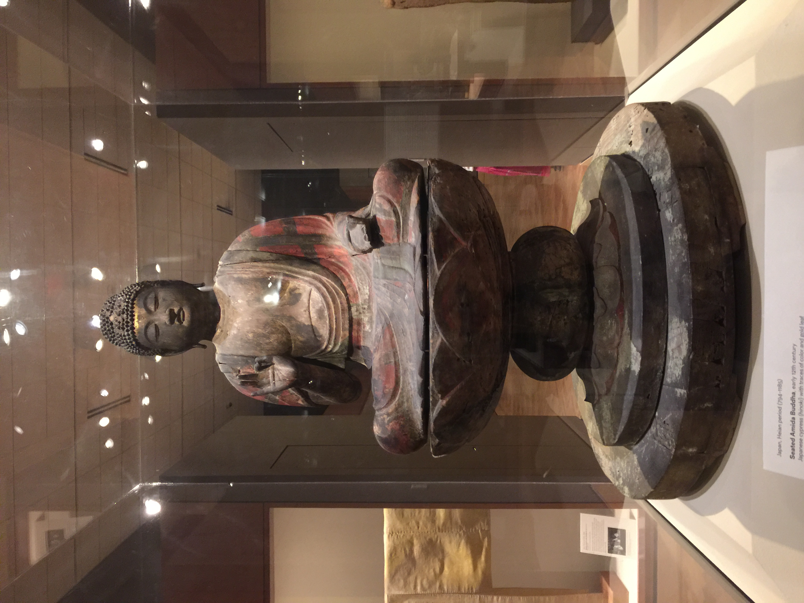

Figurine of a Female

1000BC-800BC
This clay figure of a female(𝑑𝑜𝑔𝑢 in japanese) is belived to have some kind of meaning in life and death, because statues of this type are almost always broken, and this has led scholars to belive that people deliberatly break them after they are used in a ritual.
Vajra Warriors

1392-1573
A pair of statues similar to this one guard the entrances to Buddist temples all over Japan. The realism of these statues was achieved by seperatly carving sections of the statue and then assembling them.
Seated Amida Buddha
794-1185
This is a statue of Amida Nyorai, the Buddha of limitless light. His legs are crossed in full lotus position, his hand in a mudra(sacred gesture) of welcoming. The statue still contains traces of the gold leaf that once covered his skin.
Figure of Kuan Chung
12th-13th century
This statue is of Kuan Chung, a legendary military general whose actions in the Three Kingdoms Period(a period in China when there were three countries at war) helped restore peace and order to China. He is now worshipped as the god of war protector.
Tomb Retiune
7th century
This retuine is remarkable for its detailed modeling and colorful glaze. This is part of one of only two full excavated tomb sets in western collections. These statues were made in the Tang dynasty, which is known for these types of sculptures.